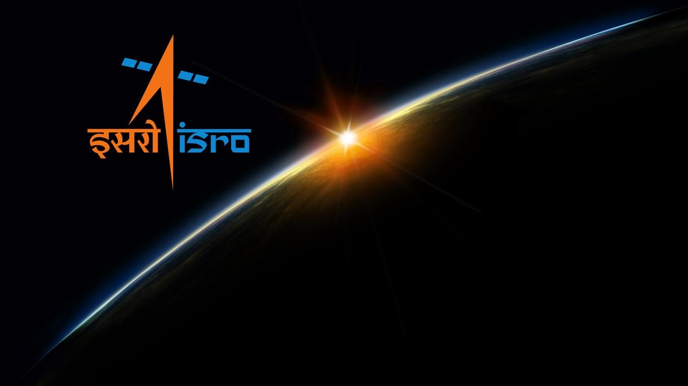

Indian Space Research Organisation is the national space agency of India.
It operates as the primary research and development arm of the Department of Space,
which is directly overseen by the Prime Minister of India,
while the Chairman of ISRO also acts as the executive of DoS.
It operates as the primary research and development arm of the Department of Space,
which is directly overseen by the Prime Minister of India,
while the Chairman of ISRO also acts as the executive of DoS.
Headquarters: Bengaluru
Founded: 15 August 1969
Founder: Vikram Sarabhai
Officeholder: S. Somanath (Chairperson)
Abbreviation: ISRO
Employees: 16,786 (2022)
Owner: Government of India
Founded: 15 August 1969
Founder: Vikram Sarabhai
Officeholder: S. Somanath (Chairperson)
Abbreviation: ISRO
Employees: 16,786 (2022)
Owner: Government of India
Chairman
Shri S. Somanath
"assumed the charge of Secretary, Department of Space and Chairman, Space Commission on 14 January
2022.
In his previous assignment he was Director, Vikram Sarabhai Space Centre (VSSC), the lead Centre
responsible for Launch vehicle technology development. Prior to that he has been the Director of
Liquid
Propulsion Systems Centre (LPSC) at Valiamala, Thiruvananathapuram till December 2017. He was the
Associate Director (Projects) of Vikram Sarabhai Space Centre and also the Project Director of GSLV
Mk-III Launch vehicle. Under his leadership as the Project Director, the first Experimental flight
of
LVM3-X/CARE mission was successfully accomplished on 18th December, 2014."
Solar System